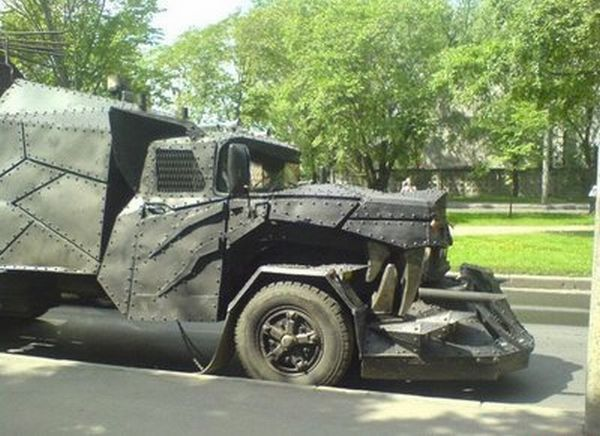
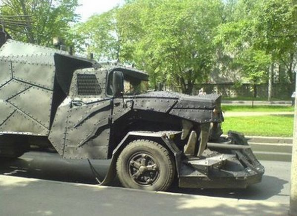
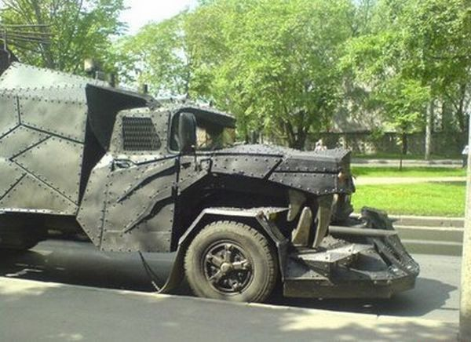
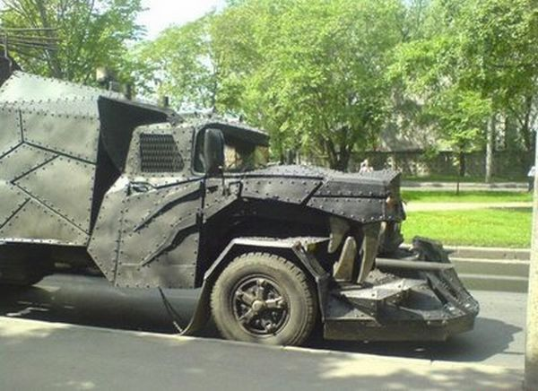

The Wolf Armoured Vehicle (Hebrew: זאב) is an armoured personnel carrier, used mainly by the Israeli Defence Force. It was created to provide a better handling and better protected armoured vehicle than the M113 (Bardelas). The Wolf is a heavily armoured crew carrier, manufactured by the company Carmor. It combines a commercial truck's speed and maneuverability and APC-like armour, qualities necessary for low-intensity confrontation.